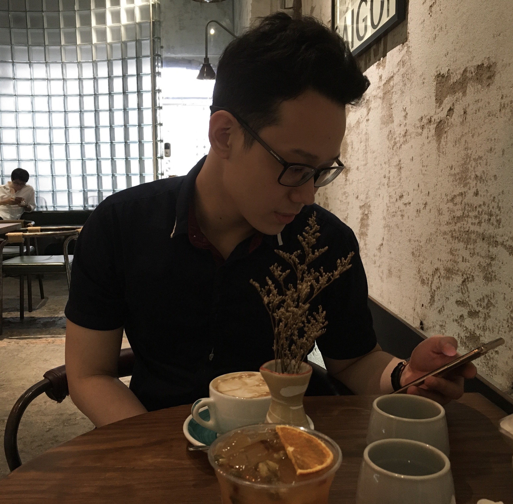
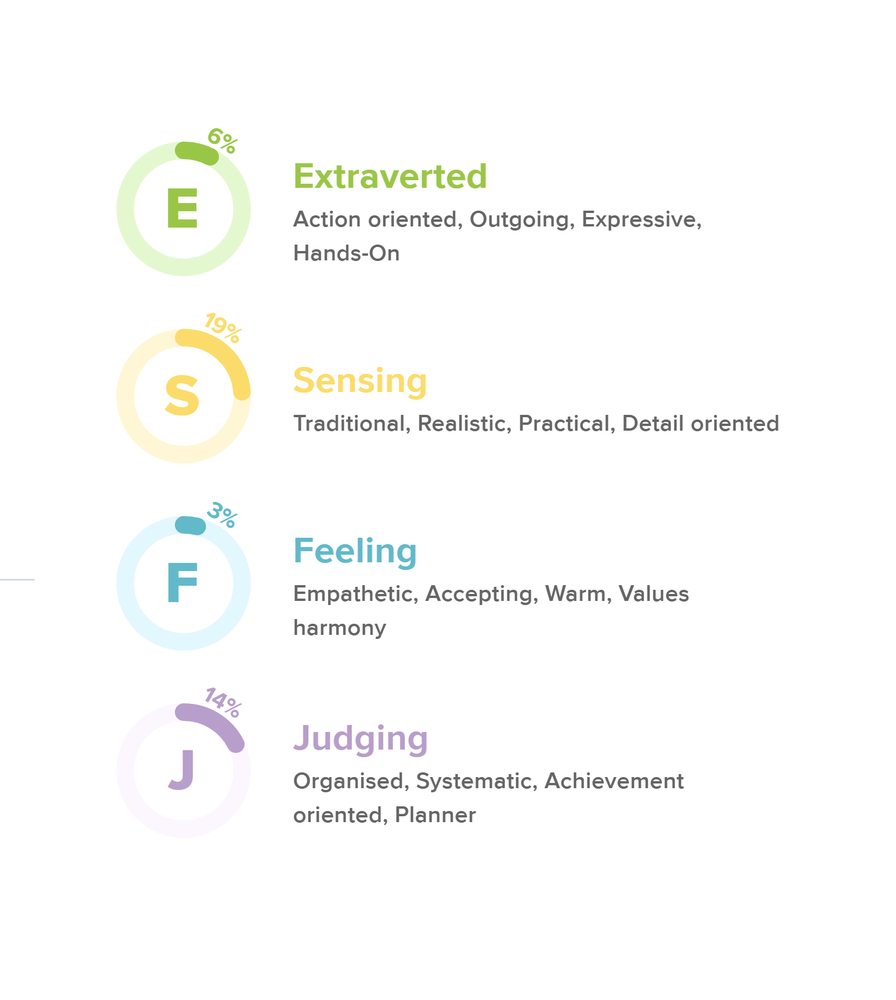

Personal information
My name: Dang Hoang Anh Khoa
sID: s3836606
Email: s3836606@rmit.edu.vn
Gender: ♂
Nation: Vietnam
Language: English, Vietnamese
Degree: Information technology bachelor at RMIT
Learn more about my portfolio
Personal summary
For a year, I worked as a consultant for a technology firm before opting to return to RMIT to further my education (Royal Melbourne Institute of Technology). During my English education at this institution, I developed an interest in IT (Information and Technology). Websites and applications, in particular, are examples of technology. As a result, I've done some research. I gained knowledge in those sectors and learned several programming languages that I believe will be useful in the future. Support me with areas like CSS (Cascading Style Sheets) and HTML (Hypertext Markup Language). Python, plus a little bit about MySQL (hypertext markup language). At the moment, I'm JavaScript is something I'm learning. Even if I am busy, I can work hard to complete my tasks. stymied by unusual programming languages
Personal Profile
With just 6% extroverted, it suggests I will be sociable while meeting new people. As I previously stated, my personal conversional trait of just 19 percent sensing aids me in making effective decisions. The final two percentages I received will help me keep my role as a decision-maker in a group since I cannot be enticed in any manner, regardless of my feelings. However, because I am so detached from my emotions, my capacity to reconcile is a weakness.
Experience
I had experience as a consultant in “Haravan” for a year link here. That company sells their selling methods through their website platform that allows businesses to do many things at the same time such as increase loyalty of customers by giving discount events, managing products, marketing their products by using google advertising, and getting statistics from daily selling products. I recognize that this omnichannel selling keeps many opportunities to be promoted in the future by integrating more techniques to be a solid system when allowing customers to do more things than just selling and marketing their products. Thus, I expect that during my study time, I can learn more academic knowledge that will provide me with more skills in understanding websites, apps and multi-channel selling systems. I can have more practised time to build websites as well as promoting group abilities.